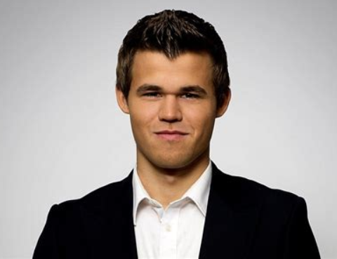

About the Niner Chess Club
Mission Statement
To provide an environment on campus for students to learn and play the game of chess.
 |
 |  |
 |
| President: Zack Clements | President: Riley Barnes | Treasurer: Andrew Kirkman | Secretary: Noah Berry |
|---|
Founded in the fall of 2020, the Niner Chess Club began as a group of students interested in playing chess against their classmates. This quickly evolved into a Discord server for chess at UNCC, which quickly turned into a official club on campus. With all of this taking place during the COVID-19 pandemic, the club has been unable to host any in-person events. Since early October, the club has hosted a weekly tournament on Lichess, and more recently has also offered chess.com tournaments as well. The club hopes to begin hosting in-person events in 2021 in order to create a larger impact on campus.